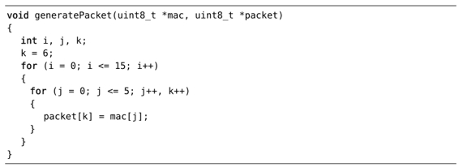

），它允许我们“加快编辑-编译-编辑循环”。
），它允许我们“加快编辑-编译-编辑循环”。技巧104不用离开Vim也能编译代码
我们可以在Vim中调用外部编译器，从而省去了离开编辑器的麻烦。而且如果编译器有任何错误信息输出的话，Vim还为我们提供了快速跳转到出错位置的方法。
准备工作
我们将用一个小的C语言程序作为演示。这些源代码文件都已随书发行（更多细节，请参考下载本书中的示例），请在shell中切换至代码所在的路径code/quickfix/wakeup。
➾ $ cd code/quickfix/wakeup
编译此程序需要用到gcc编译器，但如果你只是想验证本技巧中步骤的话，其实没必要安装此编译器，因为这里所展示的工作过程只是为了说明quickfix列表的设计初衷（其名字就由此而来）。我们很快会看到此功能的其他用途。
在Shell中编译工程
示例中的wakeup程序由3个文件组成：Makefile、wakeup.c以及wakeup.h。在shell中，我们可以运行make来编译此程序：
➾ $ make
《 gcc -c -o wakeup.o wakeup.c
wakeup.c:68: error: conflicting types for ‘generatePacket’
wakeup.h:3: error: previous declaration of ‘generatePacket’ was here
make: *** [wakeup.o] Error 1
编译器输出了一份提示性的报告，其中指出了几处错误。能在系统终端中看到这些信息固然不错，但我们现在的目的是要浏览每一处错误，并在Vim中将它们一一改正。
在Vim中编译工程
这一次，我们不在shell中运行make，而是尝试着在Vim内部编译整个工程。首先，请确保你已经切换到Makefile文件所在的目录code/quickfix/wakeup，然后使用以下命令打开Vim：
➾ $ pwd; ls
《~/code/quickfix/wakeup
Makefile wakeup.c wakeup.h
➾ $ vim -u NONE -N wakeup.c
我们现在就可以从Vim内部运行:make命令了：
➾:make
《 gcc -c -o wakeup.o wakeup.c
wakeup.c:68: error: conflicting types for ‘generatePacket’
wakeup.h:3: error: previous declaration of ‘generatePacket’ was here
make: *** [wakeup.o] Error 1
Press ENTER or type command to continue
我们得到的结果与在shell中运行make的结果一致。唯一的不同是Vim会对输入结果进行某些智能的处理。Vim除了会显示make命令的输出结果外，还会解析结果中的每一行内容，并把文件名、行号以及错误信息提取出来。对于每一条出错信息，Vim都会在quickfix列表中为其创建一项记录。我们可以上下浏览这些记录项，让Vim跳到错误信息所在的行上。正如Vim的 quickfix文档所述（参见:h quickfix），它允许我们“加快编辑-编译-编辑循环”。
运行完 :make后，Vim会跳转到quickfix列表的第一项记录。具体到本例来讲，光标此时应该位于wakeup.c中以下函数的起始位置:

此处的错误信息显示“冲突的类型‘generatePacket’”。利用命令:cnext，我们可以跳转到quickfix列表的下一处出错位置。具体到本例来讲，我们将会跳转到文件wakeup.h中的这一行文本：
很明显，编译器之所以报错，是因为该函数在头文件中的声明与具体的实现不符。让我们把位于头文件中的类型改为uint8_t。具体改动如下：
保存一下此处的修改，然后重新调用:make：
➾:write
➾:make
《 gcc -c -o wakeup.o wakeup.c
gcc -o wakeup wakeup.o
这一次，程序编译成功了。quickfix列表的内容也会根据最近一次make调用的输出而相应地更新。由于没有出现编译错误，因此光标保持不动。
不改变光标位置
当我们运行:make命令时，Vim会自动跳转到第一处错误上（除非没有出现任何错误）。如果我们想保持光标位置不变，可用以下命令来代替原来的命令：
➾:make!
位于结尾处的符号 ! 将指示Vim只更新quickfix列表，而不跳到第一处错误。现在假设在我们运行:make之后，突然发现应该使用带叹号的版本，我们要怎样才能让光标回到运行:make之前的位置呢？很简单，使用<C-o>命令将返回跳转列表（jump list）的上一处位置。更多细节，请参见技巧55。